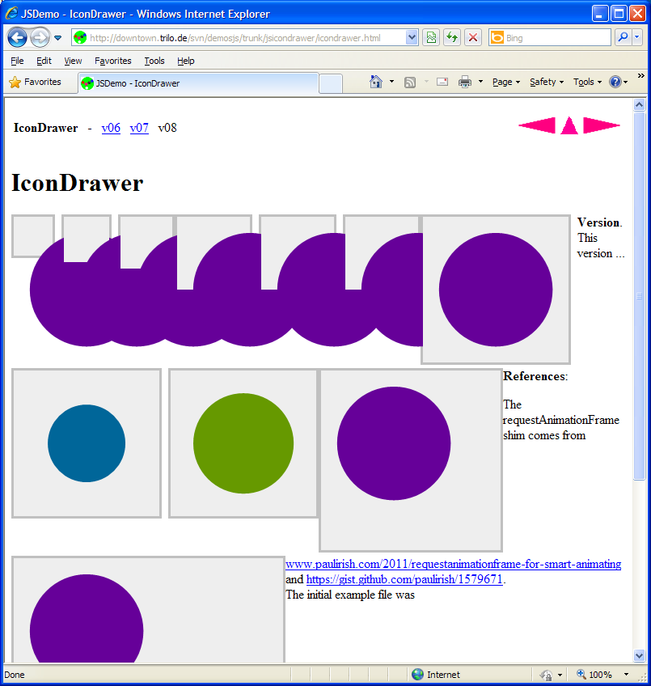

| CanvasGear - Installation Features Issues Ref Demo |
|
CanvasGear
No schedule exists. Nevertheless, this page exists to hold issues, quirks, todos and the roadmap.
Outsource drawing code from the time loop
to a dedicated function, which can serve
as the Algo property of the Ikon object.
(Done)
JavaScript advanced programming. Currently,
different algorithms are called via a switch,
depending on the given token from the commandline.
Todo:
Make the algorithm function a property of the icon, so it can
directly be called without any switch.
Generalize features. E.g. make the rotate function not part
of one specific algorithm, but make a rotation applied to
all algorithms like an overlay.
Allow algorithms be provided in separate files.
Write algorithm to draw verctor graphics from graphic files like *.svg.
If you paint over the borders of the canvas, expect two behaviours (Issue # 20140828.0541) :
Here screenshots demonstrating the two different rendering flavours :

CanvasGear in IE8

CanvasGear in Opera. Chrome and Firefox look the same.
(Issue # 20140828.1151) With IE8, the canvas property 'innerHTML' is unusable. In IE8, the following line yields an unexpected value. And when workaround findComments() or getComments() is applied, IE may display the dialog below.

IE8 shows this dialog when findComments() or getComment()
are active then freezes.
var sCmd = ico.Canvas.innerHTML; // (issue # 20140828.1151) ico.Command = sCmd; // Wanted value = "color=#bb1111 speed=800" // IE8 yield = "<DIV style="POSITION: absolute; WIDTH: 24px; HEIGHT: 24px"></DIV>"
Status : open.
Proposal : Create XML file with the params for IE to read parameters from.
Issue # 20140829.0331 'Color select on canvas'.
When drawing on a canvas, a line is started with beginPath(), the color and the stroke can be set. On one canvas, only one style seems possible, but more styles are wanted.

Note canvas number two with the yellow stroke.
Note icons one and two. It tries to draw two objects, a triangle and a line. It has only one color and stroke, not different, as should. How to write code to put two objects on one canvas?
Todo. Clear whether this is just a coding particularity, or whether a canvas can indeed display only one color and stroke. Perhaps it has to do with layers or the like.
.
Imprint : www.trilo.de
{kind=link}